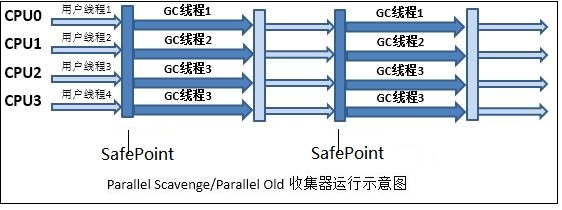
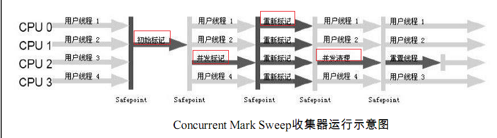
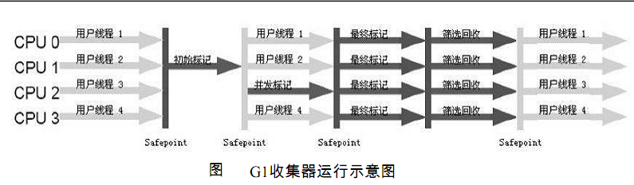
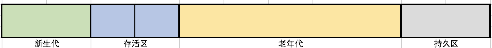
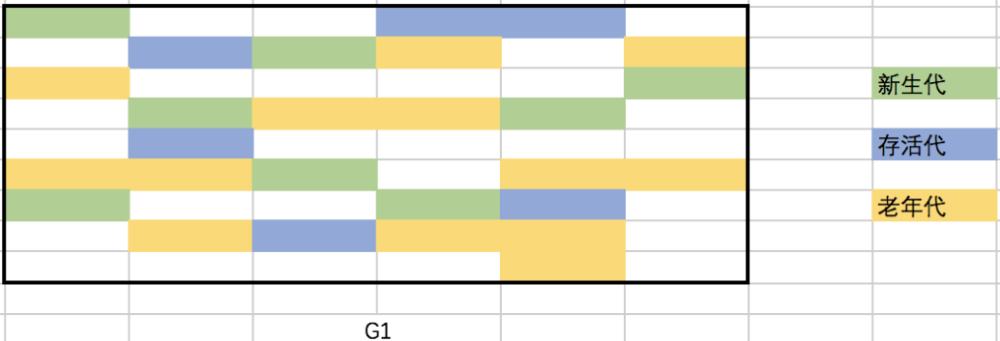

原文连接:https://www.cnblogs.com/jason1990/p/11732261.html
1.概述
Java应用启动的时候，除了配置Xms以及Xmx参数（Xmx:InitialHeapSize， Xms:MaxHeapSize），还需要选择合适的垃圾收集器。
截止Jdk1.8，共提供了7款垃圾收集器，每一款垃圾收集器都具有不同的特点。我们所需要做的就是，根据Java应用的特点已经部署环境，确定不同垃圾收集器的组合。这几款垃圾收集器之间联系如下图所示：

由上图可知，Serial，ParNew，Parallel Scavenge主要负责Young generation区域的垃圾回收，CMS，Serial Odl， Parallel Old主要负责Tenured generation区域的垃圾回收，G1在Young generation以及Tenured generation区域均可以使用(详细原因在下文会进行阐述)。
2.垃圾收集器概述
jdk提供了多重垃圾收集器，下文会提供主流的垃圾收集器搭配组合，各种组合按照特点分为以下三类：
- 串行收集器：Serial + Serial Old;
- 并行收集器: Parallel Scavenge + Parallel Old，专注于应用吞吐量；
- 并发收集器：CMS，G1，专注于响应时间。
2.1 Serial收集器

Serial收集器（Serial + Serial Old）的主要特点是单线程回收资源。当需要执行垃圾回收时，程序会暂停一切工作(又称为Stop The World，STW)，使用复制算法完成垃圾清理工作。
优点：
- 简单高效，是Client模式下默认的垃圾收集器；
- 对于资源受限的环境，比如单核(例如Docker中设置单核)，单线程效率较高；
- 内存小于一两百兆的桌面程序中，交互有限，则有限的STW是可以接受的。
缺点：
- 垃圾回收速度较慢且回收能力有限，频繁的STW会导致较差的使用体验。
ParNew收集器是Serial收集器的多线程版本，除了使用多线程进行垃圾收集工作，其他的控制参数，收集算法，对象分配规则等均与Serial收集器一致。
ParNew收集器在单核/双核环境下，效率未必有Serial收集器工作效率高(多线程切换开销等因素限制)，当然随着核数的增加，其性能也会得到较大的提升。
2.2 Parallel收集器

Parallel收集器（Parallel Scavenge + Parallel Old）相比于Serial收集器的主要特点是，其是通过多线程完成垃圾的清理工作。其中Parallel Scavenge使用复制算法完成垃圾收集（Parallel Old使用标记整理算法），如果从这一点看其与ParNew相似，但实际上两者的出发点存在区别，区别如下所示：
- ParNew出发点在于加速资源回收的速度，以减少应用的STW时间；
- Parallel Scavenge出发点在于资源回收的吞吐量(吞吐量:用户线程时间/(用户线程时间 + GC线程时间)).
高吞吐量适合于交互较少的后台应用程序（诸如科学计算应用），能够更加充分的压榨CPU。开发者可以根据应用的实际情况，通过调整以下两个参数追求最优性能：
- 最大停顿时间：垃圾收集器在执行垃圾回收时终端应用执行的最大时间间隔,-XX:MaxGCPauseMills;
- 吞吐量：执行垃圾收集的时间与执行应用的时间占比，-XX：GCTimeRatio=
，垃圾收集时间占比：1/(1+N)。
2.3 CMS收集器

CMS(Concurrent Mark Sweep)收集器是jdk 1.5推出的第一款真正意义上的并发收集器（针对老年代），实现了让垃圾收集器与用户线程（近似）同时工作，其具有以下特点：
- 基于"标记-清除"算法；
- 以获取最短回收停顿时间为目标；
- 并发收集，停顿时间短。
CMS的垃圾收集过程比较复杂，主要步骤如下所示：
(1) CMS Initial Mark：初始标记Root(会STW，单线程执行，不过因为仅仅把GC Roots的直接可达对象标记一下，所以速度较快)；
(2) CMS Concurrent Mark：并发标记；
(3) CMS Concurrent Preclean: 并发预清理；
(4) CMS Remark: 并发标记(会STW，此步骤是因为在并发标记的过程中可能会产生新的垃圾，需要重新标记新产生的垃圾)；
(5) CMS Concurrent Sweep: 并发清除；
(6) CMS Concurrent Reset: 并发重置。
以上步骤中，最为耗费时间的并发标记与并发清除阶段，不需要应用程序暂停执行，所以垃圾回收的停顿时间较短。
缺点：
- 对CPU资源敏感：并发收集虽然不会暂停应用程序，但是会占用CPU资源从而降低应用程序的执行效率（CMS默认收集线程数量=(CPU数量 + 3) / 4）;
- 产生浮动垃圾：在并发清除时，用户线程会产生新的垃圾，称之为浮动垃圾（并发清除时需要预留内存空间，不能像其他收集器在老年代几乎填满之后再进行收集工作）。
- 产生空间碎片：使用"标记-清除"算法，会产生大量不连续的内存碎片，从而导致在分配大内存对象时，无法找到足够的连续内存，从而需要提前触发一次Full GC操作。
针对以上缺点，可以从如下参数进行改进：
- -XX:ConcGCThreads:并发的GC线程数，从而降低CPU敏感度；
- -XX:CMSInitiatingOccupancyFraction：合理设置CMS的预留内存空间；
- -XX:+UseCMSCompactAtFullGCCollection: FullGC之后执行压缩操作，消减内存碎片；
- -XX:CMSFullGCBeforeCompaction: 执行多次FullGC之后执行压缩操作，消减内存碎片。
2.4 G1收集器

需要注意的是G1垃圾收集器在新生代以及老年代都能进行工作，这是因为相比于前面所介绍的垃圾收集器，它具有不同的堆内存结构。以前的垃圾收集器分代是划分为新生代、老牛代、持久带等
。

G1将内存划分为多个大小相同的Region(1-32M，上限2048个)，每个Region均拥有自己的分代属性，这些分代不需要连续。通过划分Region，G1可以根据计算老年代对象的效益率，优先回收具有最高效益率的对象（分代的内存不连续，GC搜索垃圾时需要全盘扫描找出对象引用情况，G1通过在每个Region中维护一个Remembered Set记录对象引用情况解决此问题）。具体如下图所示：

G1提供了两种GC模式，Young GC以及Mixed GC,两种GC都会STW。
2.4.1 Young GC
选定所有年轻代里的Region。通过控制年轻代的region个数，即年轻代内存大小，来控制young GC的时间开销。
2.4.2 Mixed GC
选定所有年轻代里的Region，外加根据global concurrent marking统计得出收集收益高的若干老年代Region，在用户指定的开销目标范围内尽可能选择收益高的老年代Region。
Mixed GC不是Full GC，它只能回收部分老年代的Region，如果mixed GC实在无法跟上程序分配内存的速度，导致老年代填满无法继续进行Mixed GC，就会使用serial old GC（full GC）来收集整个GC heap（此时效率就会很低下）。所以我们可以知道，G1是不提供Full GC的。
在执行Mixed GC之前需要进行并发标记过程(Global Concurrent Marking)，具体步骤如下图所示：
- Initial marking phase: 标记GCRoots(会STW)；
- Root region scanning phase： 标记存活Region；
- Concurrent marking phase：标记存活的对象；
- Remark phase：重新标记(会STW)；
- Cleanup phase： 回收内存。
需要注意，Mixed GC并不是一次性执行完，其会分为多个步骤执行(具体可见下一篇关于GC日志的文章)。在每次执行时，G1会计算每个Region中垃圾占内存分段比例，如果超过了-XX:G1MixedGCLiveThresholdPercent,则进行回收操作。此外，G1中可以设置堆内存中有多少空间允许浪费，即-XX:G1HeapWastePercent，在并发标记结束后，可以知道有多少空间要被回收，在每次Young GC和发生Mixed GC之前，会检查垃圾占比是否到达了此阈值，只有到达了，才会发生Mixed GC。
PS:
资料收集过程中，感谢以下作者文章的参考：
https://bdqfork.cn/articles/33
https://juejin.im/post/5bade237e51d450ea401fd71如果您觉得我的文章对您有帮助，请关注我的微信公众号，谢谢!